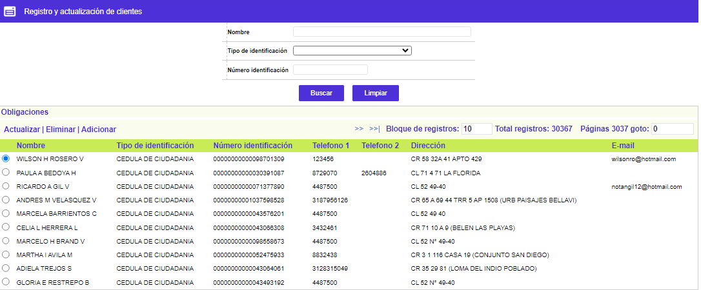
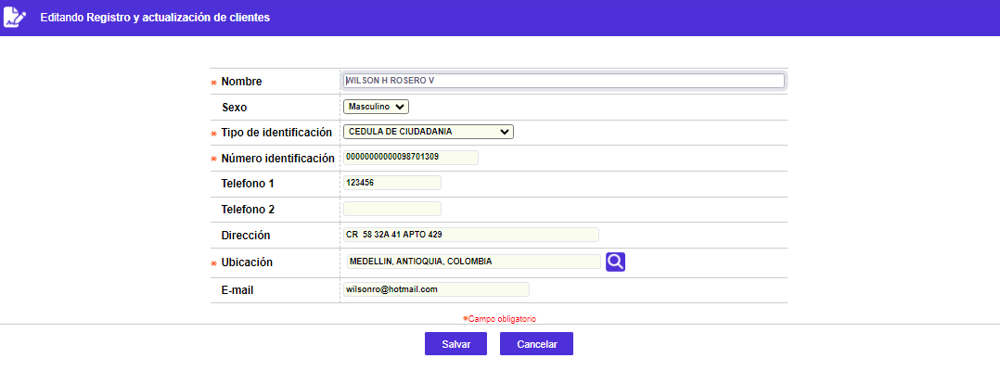
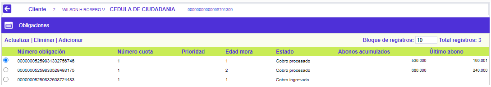
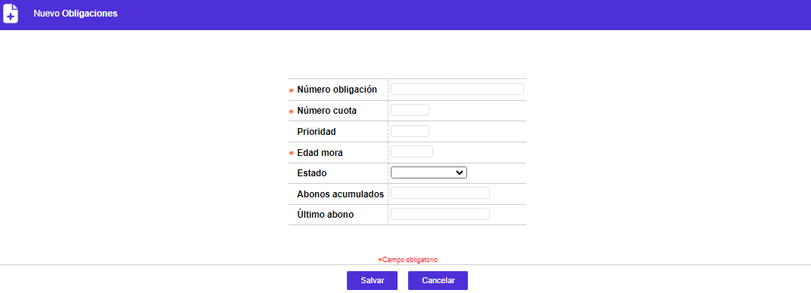
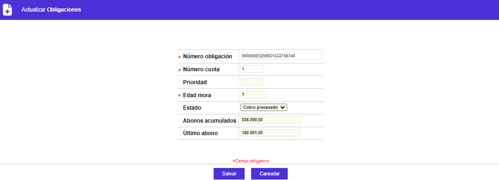

Registro y actualización de clientes
Mediante este formulario se habilita el mantenimiento y consulta de una tabla que contiene la información de todas las obligaciones a las que se le ha iniciado gestión de cobro. El primer formulario permite la captura de la información básica de identificación y ubicación d el cliente, mientras que en el segundo se desagregan todas y cada una de las obligaciones del cliente deudor a las que se les adelanta proceso de cobro.
El formulario contiene las opciones Actualizar, Eliminar, Adicionar y la opción Obligaciones.

Adicionar: Si el usuario invoca la opción Adicionar se despliega un formulario con los siguientes campos:

|
Nombre |
Campo alfanumérico de 80 posiciones, obligatorio, en el que se registra el nombre del cliente deudor al que se le ha iniciado proceso de cobro. |
|
Sexo |
Este campo cuenta con lista de valores adjunta de la que debe seleccionarse entre Femenino o Masculino el género correspondiente del deudor, dato que sirve de base para validar el número del documento de identificación en aquellos países o estados en que exista una relación entre ambos. |
|
Tipo de identificación |
Dupla de campos, obligatorios, en el primero de los cuales se selecciona de la lista de valores adjunta el tipo o clase de documento de identificación poseído por el cliente, y en el segundo se registra el número correspondiente al mismo. |
|
Número identificación |
Campo en el cual se ingresa la información correspondiente al cliente. |
|
Teléfono 1 |
Campo alfanumérico de 12 posiciones, no obligatorio, dentro del que aparece el primer número telefónico en el que es posible ubicar al cliente deudor. |
|
Teléfono 2 |
En este campo alfanumérico de 12 posiciones, no obligatorio, se digita el segundo número telefónico en el que es posible ubicar al cliente deudor. |
|
Dirección |
Campo alfanumérico de 80 posiciones, no obligatorio, en el que se ingresa la nomenclatura de la dirección en la que es posible ubicar al cliente deudor. |
|
Ubicación |
Este campo cuenta con lista de valores poblada por medio de la opción Entidades territoriales, de la cual se debe seleccionar el municipio (ciudad) departamento (provincia, cantón) y/o país (estado) asociados a la dirección en la que es posible ubicar al cliente deudor. |
|
|
Campo alfanumérico de 30 posiciones, no obligatorio, en el que aparece la dirección electrónica a la que es posible enviar comunicaciones al cliente deudor |
Actualizar: Si el usuario invoca la opción Actualizar se despliega un nuevo formulario en cual los únicos campos modificables son los siguientes:

Obligaciones: La forma despliega el nombre del cliente al que se le asocian las obligaciones a las que se les adelanta proceso de cobro, facilitando por medio de sus campos, un reporte de los abonos realizados.
Si el usuario invoca la opción se despliega el siguiente formulario con las opciones Actualizar, Eliminar, y Adicionar.

Adicionar: Si el usuario invoca la opción Adicionar se despliega un formulario con los siguientes campos:

|
Número obligación |
En este campo alfanumérico de 25 posiciones, obligatorio, se registra la cadena de caracteres que identifica cada una de las obligaciones a las que se les inicia proceso de cobro. Si la obligación corresponde a una tarjeta de crédito en este campo debe registrarse el número de la misma para que coincidan con la base de datos en que se administran. |
|
Número cuota |
En este campo numérico de 3 dígitos, obligatorio, contendrá el número de la cuota a la que se le inician las gestiones de cobro, en aquellos tipos de créditos pactados por instalamentos o cuotas mensuales o periódicas. |
|
Prioridad |
Campo numérico de 3 dígitos, no obligatorio, en el que es posible determinar la prioridad en que deben ser atendidas las distintas obligaciones que posea el cliente deudor en proceso de cobro, por lo que aplica solo cuando existan más de una de estas. |
|
Edad mora |
En este campo numérico de 4 dígitos, obligatorio, se indica la altura o edad de mora en que inician cada una de las obligaciones en proceso de cobro, reportada mediante la interface que alimente esta forma. |
|
Abonos acumulados |
En este campo numérico de 14 dígitos más 2 decimales, se despliegan la sumatoria de los abonos realizados a cada obligación. Al alimentar los datos inicialmente permite su ingreso manual y posteriormente se actualiza de manera automática. |
|
último abono |
Campo numérico de 14 dígitos más 2 decimales, no obligatorio, en el que se registra manualmente el abono más reciente efectuado a cada obligación. |
Actualizar: Si el usuario invoca la opción Actualizar se despliega un nuevo formulario en cual los únicos campos modificables son los siguientes:
